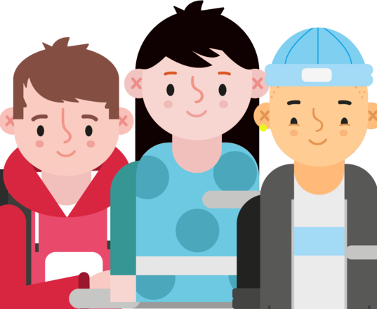
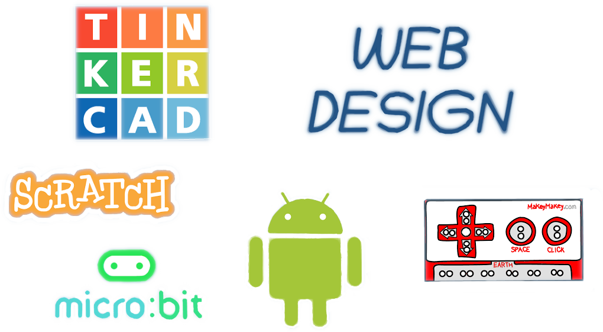

Integrantes
El club está dirigido por voluntarios que comparten su pasión por la programación y la tecnología con los niños y jóvenes, fomentando el aprendizaje colaborativo, la creatividad y el pensamiento computacional.
- Champion (gestiona el dojo)
- Mentores (aportan sus conocimientos técnicos)
- Voluntarios (ayudan en tareas de apoyo)
- Padres o tutores
- Ninjas (el principal motivo de la existencia de CoderDojo)

¿Quieres colaborar?
Necesitamos mentores para ayudar a los ninjas en su camino. Si tienes conocimientos en programación y quieres ser mentor/a voluntario/a. Habla con nosotros. ¡¡ Te esperamos !!
¿Qué podemos aprender?
En este club, los participantes aprenden a crear juegos, animaciones, aplicaciones o páginas web, usando diferentes lenguajes y plataformas como Scratch, Makecode Arcade, HTML o App Inventor.
